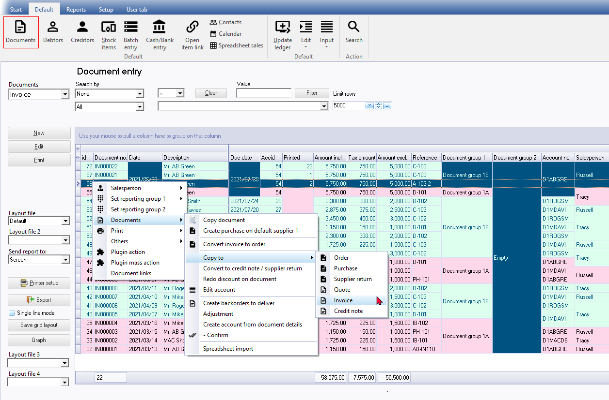

Documents list screen
This is the first screen displayed when you access the Documents in your Set of Books. At first, when you start a new Set of Books, and have not processed any documents, this list will be empty.
To access the Document selection screen:
- On the Default ribbon, select Documents (F6).
|
|
You may also click on the Input menu (Default ribbon) to select a specific sales document (Invoices, Credit notes or Quotes) or Purchase documents (Purchases or Orders) or the Point-of-Sale Invoice option. |


|
|
The Background colour and the Font colour may be set for each Document group 1 (in Setup → Groups). |
- Document type - Select one of the six (6) document types (i.e. Invoices (default), Credit notes, Quotes, Purchases, Supplier returns or Orders) if the correct one is not displayed.
- Search and filter options - Search by – Once you have selected a document type, you may filter and search by columns and/or document status (posted, unposted and/or all). You may also filter documents by Document group 1. In addition to this, you may configure the grid to show / hide columns or to group columns, etc.
|
|
If you click on the Show All Items list, it will list all Document group 1 items (in Setup → Groups (Document groups 1)). You may select any of the available groups from the list and click on the Filter button. Only those documents matching the selected Document group 1, will be listed. |

- Buttons - By default the following buttons are available:
- New - create a new document for the selected document type.
- Edit - Edit or change a selected document from the list.
- Print - Print a selected document.
|
|
If you activate (tick) the Document Posting option on the Setup → Access control (Documents tab), it will add the following two (2) buttons underneath the Print button:
|
- Layout file – Default is displayed. The global settings for layout files are done by selecting a Layout file for each document type on Setup → Documents setup (Setup ribbon).
|
|
Specific Layout files may also be selected for:
The global settings for the document layout files as selected in Setup → Documents setup (Setup ribbon) will be over-ruled. |
- Layout file 2 – This field is optional. If a layout file is selected, the document will print twice using this layout file. If you have a customised layout file, you may select the layout file. Otherwise, you may select one of the layout files as selected for Layout file (1).
|
If you need to print Delivery notes, you may you may select the Delivery note layout file. |
- Layout file 3 – This field is optional. If a layout file is selected, the document will print a third time using this layout file. If you have a customised layout file, you may select the layout file. Otherwise, you may select one of the layout files as selected for Layout file (1).
- Layout file 4 – This field is optional. If a layout file is selected, the document will print a fourth time using this layout file. If you have a customised layout file, you may select the layout file. Otherwise, you may select one of the layout files as selected for Layout file (1).
- Send report to – Select - Screen, Printer, File, E-mail or Fax.
- Printer setup – The printer settings may be set in Printer on Reports or Setup ribbons. You may click on the Page button to set the page and printer options.
|
|
If you have selected (ticked) the “Use Multiple Printers” field, you may click on the Page button of the “Printer settings” screen to select the any available printer (properly configured on your system) for the First printer, Second printer, Barcode printer and/or Label printer. You may also set the page and printer options for each of these, if necessary. |
- Export - Export the view of your document data as displayed in the list of list of documents for the selected document type. Only those records matching your sort, search and filter options will be exported.
- Single line mode - By default, this option is selected (ticked). The details for each of the documents in the list will display in a single line. If you do not select this option (remove the tick), a column header "Use your mouse to pull a column here to group on that column" will be displayed and the similar data in columns will be grouped.
- Save grid layout - Once you have used the filter and sort options (column sequences, etc.), you need to click on this button to save the grid layout. If you Exit osFinancials5, and reopen the Set of Books, the grid layout may return to its old values id you do not save the grid layout.
|
|
To display this button, you may need to hide the ribbons (double-click on any of the ribbon tabs (i.e. Start, Default, Reports, Setup or User tab). |
- Graph - Displays the documents in a graph.
|
|
You may use the filter options to display a graph that matches your filter criteria only. |
- Grid totals - This will display the line count (number of records in rows / documents) that is available on the list. The number of records will indicate the number of records that matches your filter / search criteria. It will also display the totals of the amount columns.